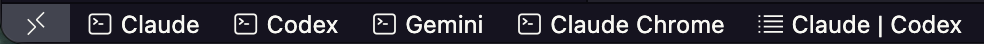
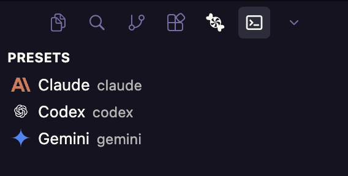
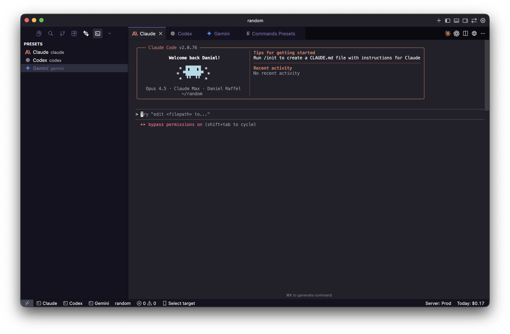
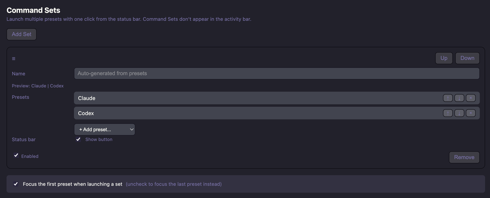
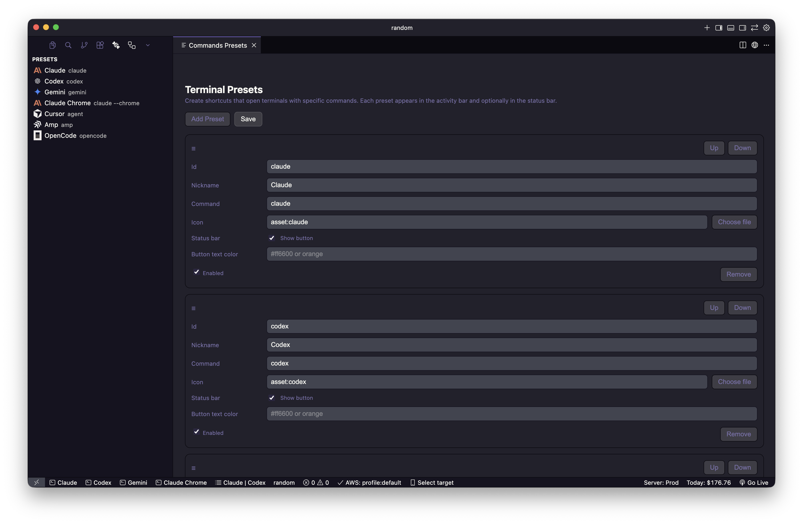

Agents in tabs,
beside your code.
Commands launches terminals alongside your code, not tucked away in a panel. One-click status bar buttons for your favorite CLIs. Command Sets to open multiple terminals at once.

1-click status bar buttons to open your favorite CLIs in VS Code and Cursor
Features
Everything you need to launch terminals quickly and keep them visible while you code.
- Terminals open in the editor area, not the panel
- One-click status bar buttons for instant access
- Command Sets launch multiple terminals at once
- Ships with 7 presets: Claude, Codex, Gemini, Claude Chrome, Cursor, Amp, OpenCode
- Customize icons, colors, and visibility
- Visual preset editor for easy configuration
- Activity bar view for all your presets
Default Setup
Ready to go
out of the box.
Commands ships with presets for popular coding CLIs. Four appear in your status bar by default, plus a Command Set that opens Claude and Codex together.
Cursor, Amp, and OpenCode presets are included but hidden from the status bar. Enable them anytime in the preset editor.

Activity bar shows all enabled presets

Terminal opens right next to your code
Command Sets
Launch multiple
terminals at once.
Command Sets let you open several terminals with a single click. Perfect for workflows that need multiple tools running simultaneously.
The default "Claude | Codex" set opens both terminals side by side. Create your own sets with any combination of presets.

Create sets with any presets, choose which terminal gets focus
Customize
Make it yours.
The visual preset editor lets you customize everything without touching JSON. Add new presets, change icons, set custom colors, control what appears in the status bar.

Visual editor for presets and Command Sets
FAQ
Common questions.
1-click install: Click the VS Code or Cursor buttons at the top of this page to open the extension directly in your editor.
Manual install: Search for "Commands: Open Terminal in Editor" in the Extensions panel (Cmd+Shift+X / Ctrl+Shift+X).
Web listings: VS Code Marketplace • Open VSX
Commands ships with presets for these coding CLIs:
The "Claude Chrome" preset uses claude --chrome to launch Claude with browser integration.
A Command Set launches multiple terminals with one click. Instead of clicking Claude, then Codex, you click "Claude | Codex" and both open at once.
You can create Command Sets with any combination of presets. They appear in the status bar (not the activity bar) and you can control which terminal gets focus when they launch.
Yes! Open the preset editor (click the gear icon in the Commands activity bar, or run Commands: Edit Presets from the command palette) and click "Add Preset."
Each preset has a nickname (display name), command (what runs in the terminal), icon, and options for status bar visibility and color.
Open the preset editor and uncheck "Show button" under the Status bar setting for that preset. The preset will still appear in the activity bar, just not as a status bar button.
You can also right-click a preset in the activity bar and choose "Hide from Status Bar."
VS Code sometimes intercepts Shift+Tab for accessibility navigation. Commands tries to pass Shift+Tab through to your terminal (useful for CLIs like Claude Code that use it for mode switching).
If it's not working, the extension will prompt you to disable settings that interfere. You can also manually set editor.accessibilitySupport to "off" in your VS Code settings.
Yes! In the preset editor, click "Choose file" next to the Icon field to select an SVG or PNG file. The extension will copy the file to your workspace.
You can also use built-in icons: asset:claude, asset:codex, asset:gemini, or any VS Code codicon like codicon:terminal.
For theme-aware icons (different icons for light/dark themes), place name-light.svg and name-dark.svg in the media folder and use asset:name.